№12 Магнитное поле, электромагнитная индукция
Разборы
№12. Магнитное поле. Электромагнитная индукция
Как и №7-8, это формульный номер (число в ответ), только материал теперь — магнетизм: закон ЭДС индукции, сила Ампера и сила Лоренца, самоиндукция. Три довольно разных по духу подтемы внутри одного номера, поэтому и разбираю их отдельными блоками.
Закон ЭДС индукции
Два родственных, но разных закона
Не путайте закон электромагнитной индукции (ЭДС в рамке из-за меняющегося внешнего потока) и закон самоиндукции (ЭДС в самой катушке из-за меняющегося в ней тока, ). Формулы похожи, физика разная — но задачи решаются одинаково: находите / и подставляете.
Пример 1) (Решу ЕГЭ №39925 — СтатГрад 16.10.2024, вариант ФИ2410101)
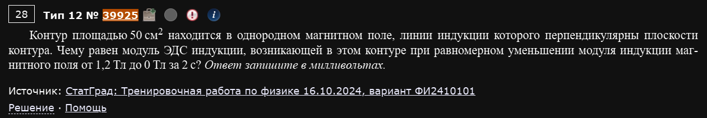
Контур площадью 50 см² находится в однородном магнитном поле, линии индукции которого перпендикулярны плоскости контура. Чему равен модуль ЭДС индукции, возникающей в этом контуре при равномерном уменьшении модуля индукции магнитного поля от 1,2 Тл до 0 Тл за 2 с? Ответ запишите в милливольтах.
Самый базовый формат: поток меняется не потому, что рамка двигается или крутится, а потому, что меняется сама индукция поля.
Ответ: 3.
Пример 2) (Решу ЕГЭ №38554 — ЕГЭ по физике 04.06.2024, основная волна)
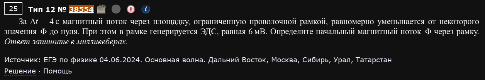
За Δt = 4 с магнитный поток через площадку, ограниченную проволочной рамкой, равномерно уменьшается от некоторого значения Φ до нуля. При этом в рамке генерируется ЭДС, равная 6 мВ. Определите начальный магнитный поток Φ через рамку. Ответ дайте в милливеберах.
Та же формула, только неизвестное — не ЭДС, а сам поток. Просто выражаем вместо того, чтобы искать :
Ответ: 24.
Пример 3) (Решу ЕГЭ №42640 — ЕГЭ-2025, досрочная волна 01.04.2025, вариант ФИПИ)
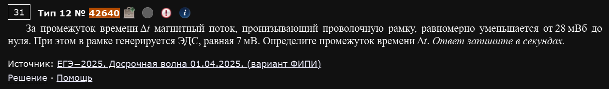
За промежуток времени Δt магнитный поток, пронизывающий проволочную рамку, равномерно уменьшается от 28 мВб до нуля. При этом в рамке генерируется ЭДС, равная 7 мВ. Определите промежуток времени Δt. Ответ запишите в секундах.
Ещё одна перестановка той же формулы — теперь неизвестное время:
Ответ: 4.
Одна формула — три неизвестных
Примеры 1-3 показывают одну и ту же формулу с тремя разными “выражаемыми”: ЭДС, поток, время. На экзамене может встретиться любой из трёх вариантов — не зубрите ответ, а перестраивайте формулу под то, что спрашивают.
Пример 4) (Решу ЕГЭ №24365 — ЕГЭ по физике 13.07.2020, основная волна)
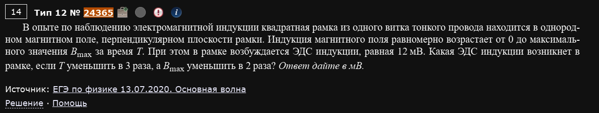
В опыте по наблюдению электромагнитной индукции квадратная рамка из одного витка тонкого провода находится в однородном магнитном поле, перпендикулярном плоскости рамки. Индукция магнитного поля равномерно возрастает от 0 до максимального значения Bmax за время Т. При этом в рамке возбуждается ЭДС индукции, равная 12 мВ. Какая ЭДС индукции возникнет в рамке, если Т уменьшить в 3 раза, а Bmax уменьшить в 2 раза? Ответ дайте в мВ.
Метод коэффициентов: площадь рамки S не меняется и не дана — она просто сократится.
Т уменьшили в 3 раза (в знаменателе — ЭДС растёт в 3 раза), Bmax уменьшили в 2 раза (в числителе — ЭДС падает в 2 раза). Итого:
Ответ: 18.
Пример 5) (Решу ЕГЭ №25031 — ЕГЭ по физике 01.04.2021, досрочная волна)
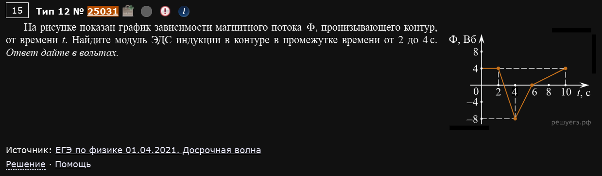
На рисунке показан график зависимости магнитного потока Φ, пронизывающего контур, от времени t. Найдите модуль ЭДС индукции в контуре в промежутке времени от 2 до 4 с. Ответ дайте в вольтах.
График не монотонный: Φ держится на уровне 4 Вб до t=2с, затем резко падает до −8 Вб к t=4с, затем поднимается обратно к 4 Вб к t=6с и держится дальше. Важно не перепутать интервал — берём именно 2→4с, а не всю картинку.
Ответ: 6.
Смотрите именно на нужный отрезок графика
На таких графиках часто несколько разных по крутизне участков. Задача всегда указывает конкретный интервал времени — считайте наклон (то есть ЭДС) только на нём, не для всего графика целиком.
Пример 6) (Решу ЕГЭ №32291 — ЕГЭ по физике 30.03.2023, досрочная волна)
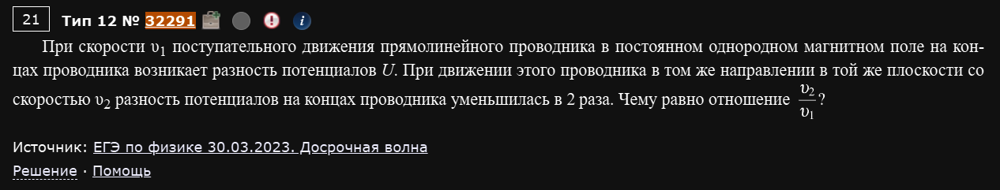
При скорости υ₁ поступательного движения прямолинейного проводника в постоянном однородном магнитном поле на концах проводника возникает разность потенциалов U. При движении этого проводника в том же направлении в той же плоскости со скоростью υ₂ разность потенциалов на концах проводника уменьшилась в 2 раза. Чему равно отношение υ₂/υ₁?
Другой физический механизм получения ЭДС — не меняющийся поток через контур, а движущийся в поле проводник (“рельсы”): . При фиксированных B и L разность потенциалов прямо пропорциональна скорости.
Ответ: 0,5.
Пример 7) (Решу ЕГЭ №33027 — ЕГЭ по физике 05.06.2023, основная волна)
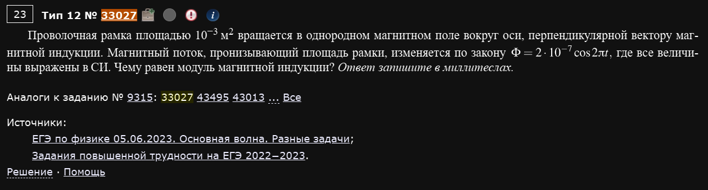
Проволочная рамка площадью 10⁻³ м² вращается в однородном магнитном поле вокруг оси, перпендикулярной вектору магнитной индукции. Магнитный поток, пронизывающий площадь рамки, изменяется по закону , где все величины выражены в СИ. Чему равен модуль магнитной индукции? Ответ запишите в миллитеслах.
Третий механизм — вращающаяся в поле рамка, поток меняется по гармоническому закону , где амплитуда . Отсюда:
Ответ: 0,2.
Читаем формулу Φ(t) как паспорт рамки
В записи зашиты сразу три вещи: (амплитуда — произведение индукции на площадь), (циклическая частота — отсюда легко получить период или частоту вращения). В зависимости от того, что дано и что спрашивают, из одной и той же формулы можно вытащить B, S, ν или T.
Сила Ампера, сила Лоренца
Одна идея, два имени
Сила Ампера действует на проводник с током, сила Лоренца — на отдельную заряженную частицу. По сути это одна и та же сила магнитного поля, только для «тока в проводе» и для «одной летящей частицы» соответственно. У обеих максимум — при (), ноль — при движении/токе вдоль линий поля.
Пример 1) (Решу ЕГЭ №42789 — СтатГрад 18.04.2025, вариант ФИ2410501)
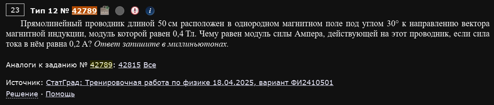
Прямолинейный проводник длиной 50 см расположен в однородном магнитном поле под углом 30° к направлению вектора магнитной индукции, модуль которой равен 0,4 Тл. Чему равен модуль силы Ампера, действующей на этот проводник, если сила тока в нём равна 0,2 А? Ответ запишите в миллиньютонах.
Прямая подстановка в формулу — самый базовый формат:
Ответ: 20.
Пример 2) (Решу ЕГЭ №40258 — СтатГрад 03.12.2024, вариант ФИ2410201)
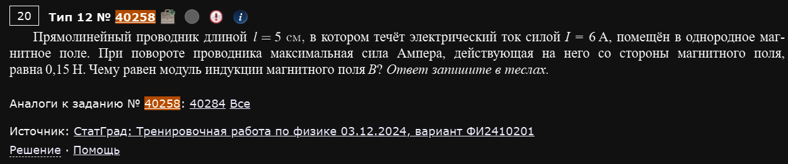
Прямолинейный проводник длиной l = 5 см, в котором течёт электрический ток силой I = 6 А, помещён в однородное магнитное поле. При повороте проводника максимальная сила Ампера, действующая на него со стороны магнитного поля, равна 0,15 Н. Чему равен модуль индукции магнитного поля B? Ответ запишите в теслах.
Ловушка в слове “максимальная”: проводник поворачивают, а сила Ампера зависит от угла через . Максимум достигается при , то есть — и именно это условие нужно использовать, хотя явно про угол 90° в условии не сказано:
Ответ: 0,5.
Пример 3) (Решу ЕГЭ №35144 — ЕГЭ по физике 05.06.2023, основная волна, Центр и Урал)
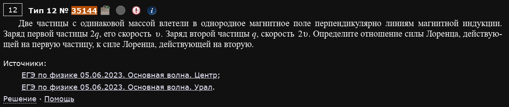
Две частицы с одинаковой массой влетели в однородное магнитное поле перпендикулярно линиям магнитной индукции. Заряд первой частицы 2q, его скорость v. Заряд второй частицы q, скорость 2v. Определите отношение силы Лоренца, действующей на первую частицу, к силе Лоренца, действующей на вторую.
Сила Лоренца не зависит от массы — только от заряда, скорости и поля. Масса в условии — просто отвлекающий манёвр:
Ответ: 1.
Пример 4) (Решу ЕГЭ №35198 — ЕГЭ по физике 05.06.2023, основная волна, Дальний Восток и Центр)
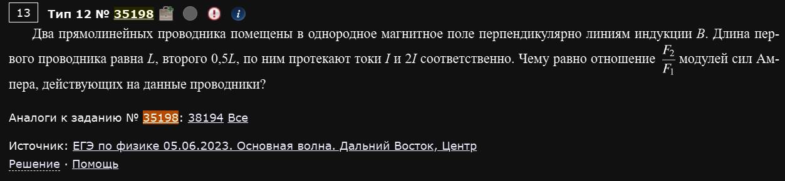
Два прямолинейных проводника помещены в однородное магнитное поле перпендикулярно линиям индукции B. Длина первого проводника равна L, второго 0,5L, по ним протекают токи I и 2I соответственно. Чему равно отношение F₂/F₁ модулей сил Ампера, действующих на данные проводники?
Тот же принцип “два меняющихся множителя компенсируют друг друга”, что и в самой первой задаче по трению в №2 — только здесь роль трюка играют длина и сила тока:
Ответ: 1.
Пример 5) (Решу ЕГЭ №50756 — ЕГЭ-2026, основная волна 11.06.2026, Центр)
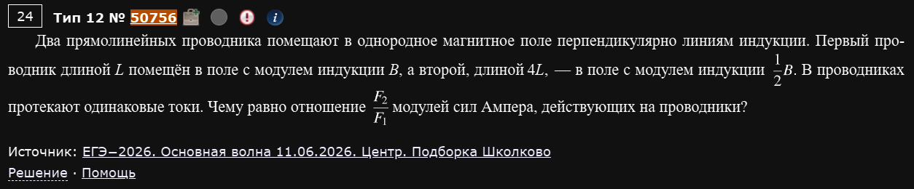
Два прямолинейных проводника помещают в однородное магнитное поле перпендикулярно линиям индукции. Первый проводник длиной L помещён в поле с модулем индукции B, а второй, длиной 4L, — в поле с модулем индукции ½B. В проводниках протекают одинаковые токи. Чему равно отношение F₂/F₁ модулей сил Ампера, действующих на проводники?
Похожая идея, но теперь варьируются длина и сама индукция поля (у каждого проводника — своё поле), а не сила тока:
Ответ: 2.
Самоиндукция
Пример 1) (Решу ЕГЭ №29149 — ЕГЭ по физике 31.03.2022, досрочная волна, вариант 2)
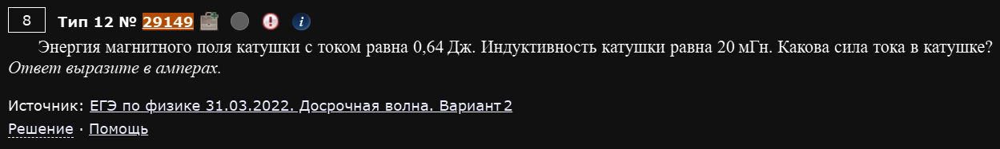
Энергия магнитного поля катушки с током равна 0,64 Дж. Индуктивность катушки равна 20 мГн. Какова сила тока в катушке? Ответ выразите в амперах.
Базовая формула энергии магнитного поля катушки, выражаем силу тока:
Ответ: 8.
Пример 2) (Решу ЕГЭ №43194 — ЕГЭ по физике 02.06.2025, основная волна, Юг)
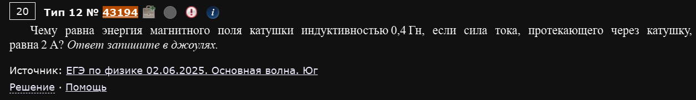
Чему равна энергия магнитного поля катушки индуктивностью 0,4 Гн, если сила тока, протекающего через катушку, равна 2 А? Ответ запишите в джоулях.
Та же формула, только теперь ищем саму энергию напрямую — самый простой вариант этого формата:
Ответ: 0,8.
Пример 3) (Решу ЕГЭ №50755 — ЕГЭ-2026, основная волна 11.06.2026, Сибирь)
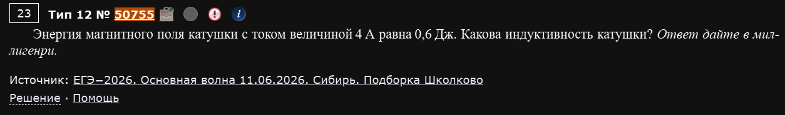
Энергия магнитного поля катушки с током величиной 4 А равна 0,6 Дж. Какова индуктивность катушки? Ответ дайте в миллигенри.
Третья перестановка этой же формулы — на этот раз неизвестна индуктивность:
Ответ: 75.
Пример 4) (Решу ЕГЭ №37868 — ЕГЭ по физике 02.04.2024, досрочная волна)
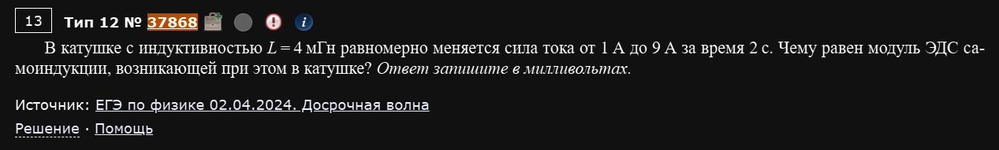
В катушке с индуктивностью L = 4 мГн равномерно меняется сила тока от 1 А до 9 А за время 2 с. Чему равен модуль ЭДС самоиндукции, возникающей при этом в катушке? Ответ запишите в милливольтах.
Формула самоиндукции — прямой аналог закона ЭДС индукции, только вместо внешнего потока меняется собственный ток катушки:
Ответ: 16.
Пример 5) (Решу ЕГЭ №37894 — ЕГЭ по физике 02.04.2024, досрочная волна, Москва)
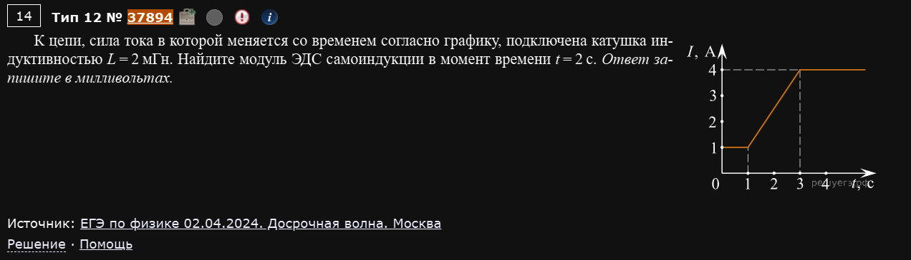
К цепи, сила тока в которой меняется со временем согласно графику, подключена катушка индуктивностью L = 2 мГн. Найдите модуль ЭДС самоиндукции в момент времени t = 2 с. Ответ запишите в милливольтах.
График I(t) не линеен целиком: ток держится на уровне 1 А до t=1с, затем линейно растёт от 1 до 4 А в промежутке 1-3с, затем снова выходит на плато. Момент t=2с попадает как раз на линейный участок — важно определить наклон именно там, а не для всего графика:
Ответ: 3.
"ЭДС в момент времени" = наклон в этой точке
Если спрашивают ЭДС не на интервале, а “в момент времени t”, ищите точку t на графике и смотрите на наклон линейного участка графика I(t), которому эта точка принадлежит — вычисления точно такие же, просто интервал для расчёта наклона выбираете сами внутри этого линейного куска.
Пример 8) (Демидова 2026, вариант 3)
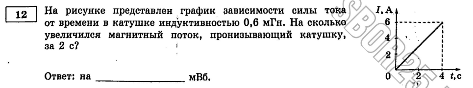
На рисунке представлен график зависимости силы тока от времени в катушке индуктивностью 0,6 мГн. На сколько увеличился магнитный поток, пронизывающий катушку, за 2 с?
График I(t) — прямая линия из начала координат до точки (4с, 6А). Новый формат по сравнению со всем, что было выше: спрашивают не ЭДС, а сам прирост потока ΔΦ — а поток катушки напрямую связан с током через , ЭДС тут вообще не нужна.
Наклон графика постоянный, поэтому за любые 2с ток меняется одинаково:
Ответ: 1,8 мВб.
Пример 9) (Демидова 2026, вариант 6)
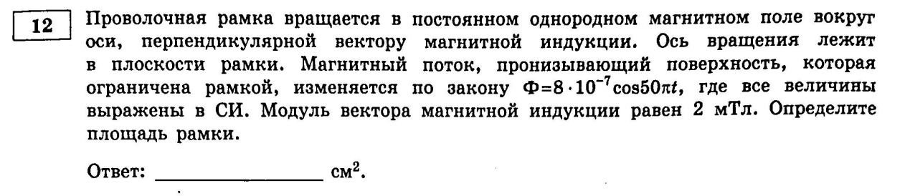
Проволочная рамка вращается в постоянном однородном магнитном поле вокруг оси, перпендикулярной вектору магнитной индукции. Ось вращения лежит в плоскости рамки. Магнитный поток, пронизывающий поверхность, которая ограничена рамкой, изменяется по закону , где все величины выражены в СИ. Модуль вектора магнитной индукции равен 2 мТл. Определите площадь рамки.
Та же формула , что и в примере 7 из первого блока — но там из неё вытаскивали B, а здесь та же амплитуда используется, чтобы найти площадь:
Ответ: 4 см².
Пример 10) (Демидова 2026, вариант 24)
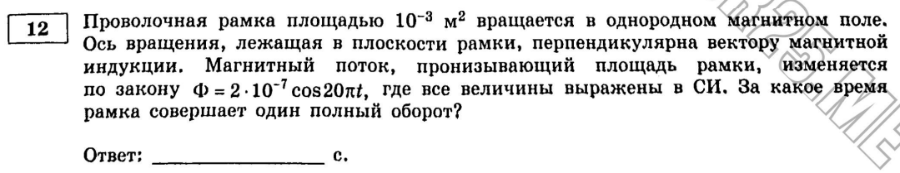
Проволочная рамка площадью 10⁻³ м² вращается в однородном магнитном поле. Ось вращения, лежащая в плоскости рамки, перпендикулярна вектору магнитной индукции. Магнитный поток, пронизывающий площадь рамки, изменяется по закону , где все величины выражены в СИ. За какое время рамка совершает один полный оборот?
Третий вариант того же самого прототипа: теперь из циклической частоты в формуле нужно вытащить период вращения — площадь и B в этот раз вообще не нужны:
Ответ: 0,1 с.
Одна формула Φ(t) — четыре вопроса
Примеры 7, 9 и 10 (плюс вариант 5 Демидовой, где спрашивают частоту вращения) показывают, что из одной и той же записи экзамен может попросить найти B, S, T или ν — по очереди отработайте все четыре, чтобы не растеряться, если попадётся непривычный вопрос.
Пример 11) (Демидова 2026, вариант 11)
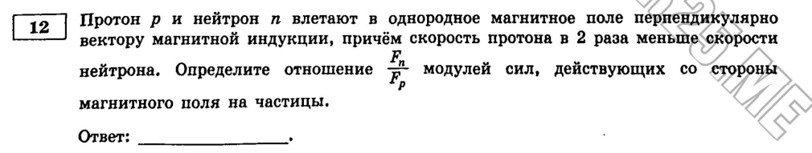
Протон p и нейтрон n влетают в однородное магнитное поле перпендикулярно вектору магнитной индукции, причём скорость протона в 2 раза меньше скорости нейтрона. Определите отношение Fₙ/Fₚ модулей сил, действующих со стороны магнитного поля на частицы.
Настоящая смысловая ловушка, не встречавшаяся в подборке с Решу ЕГЭ: нейтрон электрически нейтрален (), а сила Лоренца прямо пропорциональна заряду. Значит, на нейтрон магнитное поле вообще не действует — независимо от его скорости:
Ответ: 0.
Проверяйте, есть ли у частицы заряд вообще
Формула силы Лоренца работает только для заряженных частиц. Если в условии встречается нейтрон, фотон или любая другая нейтральная частица — сила магнитного поля на неё равна нулю по определению, и это не требует никаких вычислений с массой или скоростью.